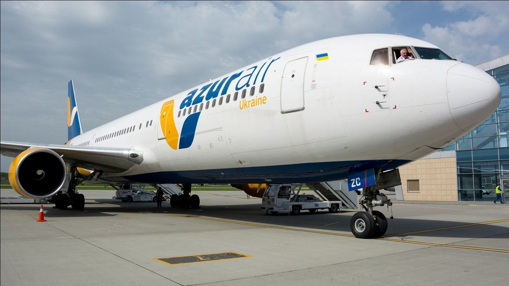

Якщо ваша цікавість завела вас до цього розділу, то нам не лишається нічого іншого, як спробувати її втамувати. Можливо, наша авіакомпанія і не встигла, за свій короткий період існування, зайняти місце поруч мастодонтів від світу авіації, одне ім’я яких призводить до запаморочення і втрати свідомості у конкурентів, однак ми до цього прагнемо і нам вже є чим пишатися.
Історія SkyAir Ukraine починається у 2019-му році, коли компанія була заснована під назвою Utair Ukraine і, маючи у своєму флоті два літаки ATR-42-300, виконала перший рейс з Луганська до Москви. У 2010-му у нас з’явився Boeing 737-400, на якому виконувалися чартерні рейси до Туреччини та Єгипту. З 2011 по 2013 рік, авіакомпанія переживала бурхливий розвиток , збільшивши свій авіапарк до шістнадцяти машин: п’ять ATR-42-300, п’ять, отриманих абсолютно новими с заводу, ATR-72-212A , три Bombardier CL600-2B19 та три Boeing 737-800, які замінили старі 737-400 на чартерних лініях. У той час, ми стали одним з провідних українських перевізників, та, співпрацюючи с туроператором Anex Tour, суттєво розширили програму туристичних рейсів.
У 2014-му році, після анексії Росією Криму та початку антитерористичної операції на сході України, ринок авіаперевезень зазнав тяжкого удару. Нам довелося скоротити кількість літаків до трьох Boeing 737-800, та повністю відмовитися від виконання регулярних рейсів. Продовжуючи співпрацю з Anex Tour, ми зосередилися на чартерних перевезеннях. З 2015-го компанія змінює назву на Azur Air Ukraine.
Починаючи з 2018-го року, до нашого авіапарку потрапили далекомагістральні літаки Boeing 767, які дозволили значно розширити географію польотів, з’єднавши українські міста прямими рейсами з екзотичним узбережжям Карибського моря та зеленими островами південно-східної Азії. Таким чином, ми надали нашим шукачам пригод можливість потрапити в ці далекі райські куточки прямо з України, не марнуючи десятки годин на підлозі транзитного аеропорту.
Базуючись у столичному аеропорту Бориспіль, компанія, однак, приймає до уваги, що занурюватися у теплу воду тропічних морів хочуть не тільки кияни. Ми не могли пустити таку кричущу несправедливість на самоплив, тому маємо рейси із регіонів, аби жителі Харкова, Запоріжжя, Львова та Одеси також мали змогу гідно відпочити, не переймаючись тим, щоб спершу дістатись Києва.
В результаті усіх старань, авіакомпанія знов повернула собі звання однієї з найбільших в Україні, з мільйонами засмаглих туристів на рахунку, які подорожували до омріяних далеких країв, на крилах наших авіаліній.Комфортний переліт сучасними лайнерами, виробництва легендарної американської корпорації Boeing, не залишить вас байдужим, особливо якщо ви вже мали досвід польотів на класиці радянського авіабудування. Тихий салон, шкіряні крісла зі спинкою, що регулюється за вашим вподобанням, зроблять подорож на тисячі кілометрів ледве помітнішою за відвідування ресторану.
На борту наших літаків ви не залишитесь голодним, оскільки матимете змогу придбати ласощі за власним смаком, які допоможуть вам згаяти час, в очікуванні прибуття до курорту. А якщо цього вам видасться мало, то наш бортовий магазин безмитної торгівлі безперечно знайде чим зацікавити такого вибагливого клієнта. Наші партнери з BF Group ретельно підбирають найкращі зразки світової косметики, парфумерії та витворів кондитерського мистецтва, для задоволення найрізноманітніших потреб дорогоцінних пасажирів.
Загалом кажучи, описувати всі переваги подорожі літаками Azur Air Ukraine можна досить довго, вдаючись до химерних епітетів та дієприслівникових зворотів. Але отримати відповідь на питання – чому туристи знову і знову продовжують звертатися до наших послуг, ви зможете лише спробувавши фірмовий сервіс на власному досвіді.

МЕДІА |
SKYAIR UKRAINE |
ПЕРЕЛІТ |